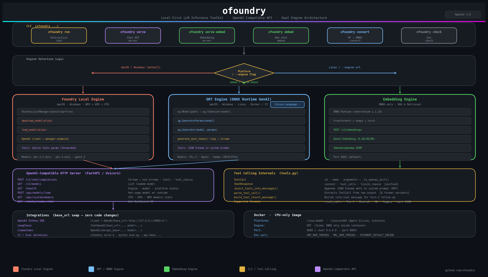

Architecture架构说明
ofoundry is designed as a modular, layered system with a CLI frontend, a FastAPI server, and pluggable inference engines.ofoundry 采用模块化分层设计，包含 CLI 前端、FastAPI 服务和可插拔推理引擎。
Architecture Diagram架构图

Code Structure代码结构
text
ofoundry/
├── cli.py # Typer CLI: chat, serve, embed, serve-embed, convert, check
├── server.py # FastAPI OpenAI-compatible server (chat + embeddings + dashboard)
├── chat.py # Interactive multi-turn terminal chat loop
├── engine_foundrylocal.py # FoundryEngine — wraps foundry-local-sdk
├── engine_ort.py # OrtEngine — wraps onnxruntime-genai
├── engine_embedding.py # EmbeddingEngine — ONNX-only text embeddings
├── monitor.py # System resource monitoring (CPU, GPU, NPU memory)
├── tools.py # Tool-calling: parse_tool_call(), inject_tools_into_messages()
├── config.py # ServerConfig dataclass
├── convert_vl.py # Vision-Language model conversion via Olive
└── static/
└── index.html # Web dashboard UI with real-time memory gaugesEngine Selection Logic引擎选择逻辑
| Condition | Engine | Model Argument |
|---|---|---|
| macOS / Windows (default) | Foundry Local | Catalog alias (e.g. Phi-4-mini-instruct-generic-cpu:5) |
--engine ort or Linux (default) | ONNX Runtime GenAI | Local directory path |
embed / serve-embed commands | EmbeddingEngine (ONNX) | Local ONNX model directory |
| VL model detected | ORT (auto-switched) | Local directory with vision.onnx |
Foundry Local Engine FlowFoundry Local 引擎流程
text
FoundryLocalManager(bootstrap=True)
→ download_model(alias)
→ load_model(alias)
→ OpenAI client streams via manager.endpointThe Foundry Local engine delegates to the Microsoft Foundry Local daemon, which handles hardware detection and model management. The SDK provides an OpenAI-compatible client that streams responses directly.
ORT Engine FlowORT 引擎流程
text
og.Model(path) → og.Tokenizer(model) → og.GeneratorParams(model)
→ og.Generator(model, params) → generate_next_token() loop → stream tokensThe ORT engine loads models directly using ONNX Runtime GenAI. It tokenizes input, configures generation parameters, and runs the inference loop locally — fully offline with zero network dependency.
Tool-Calling Internals工具调用内部实现
| Component | Role |
|---|---|
ToolCall | Dataclass: id, name, arguments → .to_openai_dict() |
ChatResponse | Unified engine response: content, tool_calls, finish_reason |
inject_tools_into_messages() | Appends JSON Schema tool definitions to system prompt (ORT path) |
parse_tool_call() | Extracts ToolCall from raw model output; handles 6 format variants |
build_tool_result_message() | Builds the role: tool message for turn-2 follow-up |
Tool-Calling Data Flow工具调用数据流
text
User request + tools
→ inject_tools_into_messages() [ORT] / pass tools natively [Foundry]
→ Engine generates response
→ parse_tool_call() extracts ToolCall
→ Application executes the function
→ build_tool_result_message() creates turn-2 message
→ Engine generates final response with tool result contextHTTP Request LifecycleHTTP 请求生命周期
text
Client POST /v1/chat/completions
→ FastAPI route handler
→ Validate ChatCompletionRequest (Pydantic)
→ Resolve engine (Foundry / ORT)
→ If VL model: extract images, build VL messages
→ If tools: inject into messages or pass natively
→ If streaming:
→ StreamingResponse with SSE chunks
→ Each token yielded as data: {...}
→ If non-streaming:
→ Collect full response
→ Return JSON with choices[]
→ Log request timing & statsEmbedding Engine Flow嵌入引擎流程
text
EmbeddingEngine(model_path)
→ Load ONNX model via onnxruntime.InferenceSession
→ Tokenize input via transformers.AutoTokenizer
→ Run inference → extract embeddings
→ Normalize & return float[] vectors